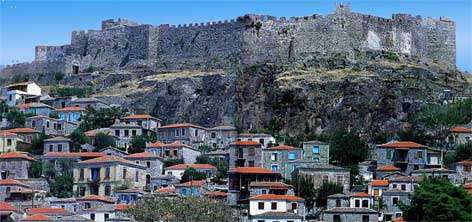

Κάστρο Μήθυμνας (Μόλυβου) Λέσβου
 «Σεβαστή» ή «προστατευμένη» σημαίνει η προελληνική ονομασία Μήθυμνα (το επίσημο όνομα του Μόλυβου), ονομασία που παραπέμπει προφανώς στα ισχυρά τείχη που προστάτευαν την αρχαία πόλη. Το νεότερο φρούριο χτίστηκε στην ίδια θέση πιθανόν από τη Φραγκική οικογένεια των Γατελούζων (14ος αι.). Αντιστάθηκε σε επιδρομές Αράβων, Σελτζούκων πειρατών, Ενετών και Γενοβέζων, παραδόθηκε ωστόσο αμαχητί στους Οθωμανούς (1462) και πολλοί κάτοικοί του έφυγαν τότε και εγκαταστάθηκαν στην Καλλονή. Παρέμεινε «ζωντανό» και κατοικημένο πολύ μετά το 17ο αιώνα, ενώ στα μέσα του 19ου δεν είχε πλέον καμία αμυντική χρήση. | ||